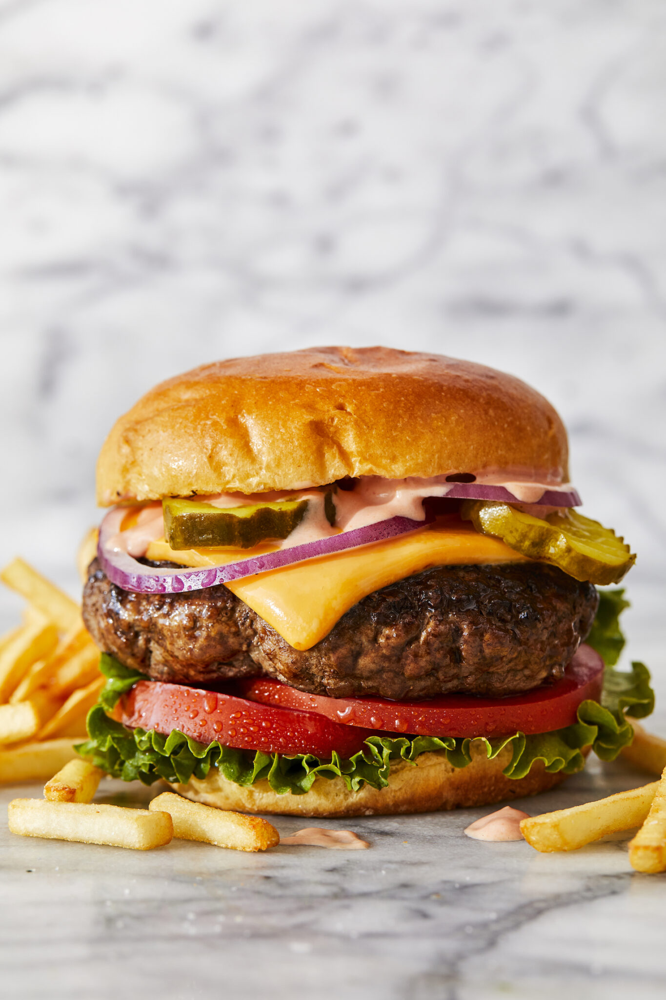

Cheeseburger

Description
Homemade cheeseburgers are a summer staple! It is super simple to make
with 80/20 ground meat, salt and pepper, and the most amazing
burger sauce! You can serve with any desired toppings, along with good quality
American cheese.
Ingredients
- 1/2 cup mayonnaise
- 1/4 cup ketchup
- 3 tablespoons dill pickle relish
- 1 tablespoon Dijon mustard
- 2 pounds ground beef, 80/20
- Kosher salt and freshly ground black pepper, to taste
- 1 tablespoon canola oil
- 6 slices of American cheese
For Serving
- Brioche hamburger buns
- Romaine or shredded lettuce
- Sliced tomato
- Sliced red onion
- Dill pickle chips
Steps
- For the burger sauce: In a small bowl, whisk together mayonnaise, ketchup,
dill pickle radish and Dijon; set aside.
- In a large bowl, combine beef, 1 1/2 teaspoons of salt and 1 1/2 teaspoons
of pepper. Stir until well combined. Gently form into 6 1-inch-thick patties,
about the size of the hamburger buns.
- Heat canola oil in a large cast iron skillet over medium heat.
Add patties and cook until lightly charred or until desired doneness,
about 3-5 minutes per side; top with cheese.
- Serve immediately in hamburger buns with burger sauce and desired toppings.